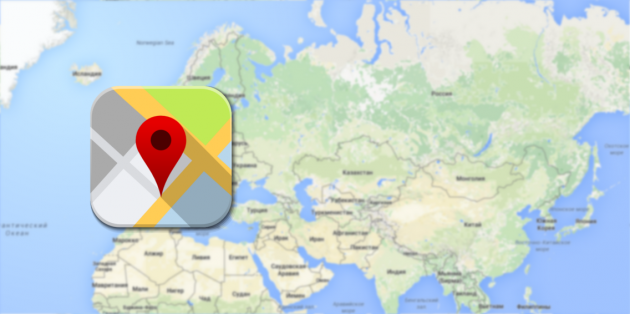
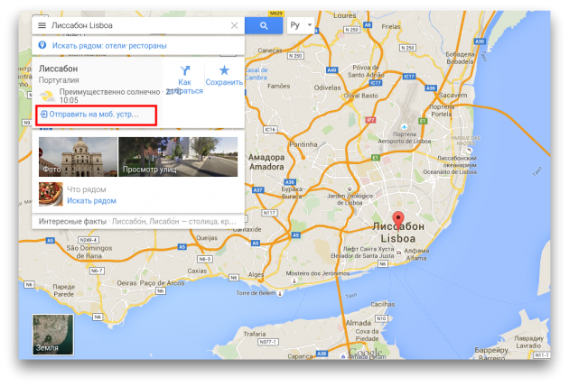

3 новые функции Google Maps, о которых следует знать
Google Maps является на сегодняшний день одной из самых удобных и функциональных картографических систем. При этом разработчики не устают добавлять в этот сервис и соответствующие мобильные приложения всё новые и новые возможности. О самых свежих из них вы узнаете из этой статьи.
{kind=link}
1. Отправка координат точки из Google Maps на смартфон Очень часто мы используем для поиска какого-либо места онлайновую версию Google Maps на компьютере или ноутбуке, а затем хотим сохранить результаты на мобильном устройстве для последующего использования. Теперь передать координаты любой точки из веб-версии Google Maps на смартфон можно нажатием всего одной кнопки.
{kind=link}
Достаточно просто поставить метку на карте, после чего в появившейся слева панели нажать на ссылку «Отправить на мобильное устройство». После этого на смартфон придёт всплывающее уведомление с названием места. Тап по этому уведомлению откроет мобильную версию Google Maps с нужной меткой.
2. Просмотр истории своих перемещений Ни для кого не секрет, что компания Google собирает сведения о каждом нашем шаге. Делает она это, разумеется, только для нашего же блага и для предоставления ещё более качественных услуг. Интересный пример такой функции появился недавно в мобильной версии Google Maps и называется «Хронология». Вы сможете найти этот пункт в меню на левой панели.
{kind=link}
{kind=link}
Здесь представлена история ваших перемещений и местоположения по датам. Интересно, что инструмент «Хронология» отображает не только маршруты, но и способ передвижения, сделанные фотографии и другие сведения.
3. Свои названия на карте Свежая версия Google Maps для Android содержит ещё одно малозаметное, но удобное нововведение. Теперь вы можете дать любой точке на карте своё собственное название. Особенно эта функция пригодится путешественникам, которым трудно запомнить адреса гостиниц, музеев и других интересных мест на иностранном языке.
{kind=link}
{kind=link}
Для доступа к этой функции тапните по нужной точке в Google Maps, а затем откройте карточку этого места. Здесь коснитесь кнопки меню (три точки сверху) и выберите пункт «Изменить название». На следующей странице введите новое имя выделенного места. В последующем вы сможете быстро найти все эти точки в разделе «Ваши места».